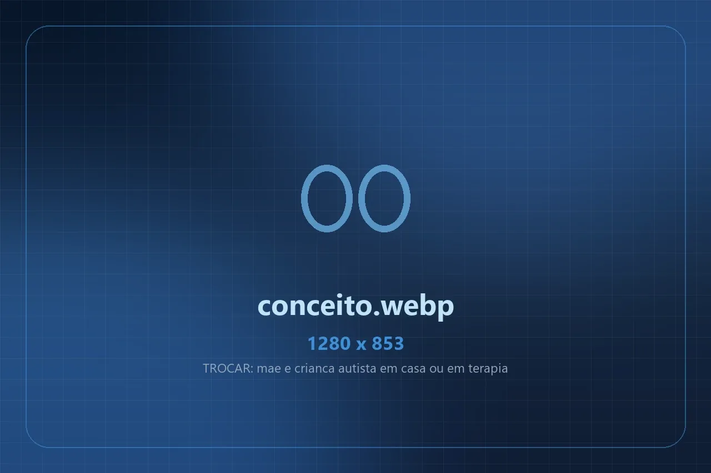
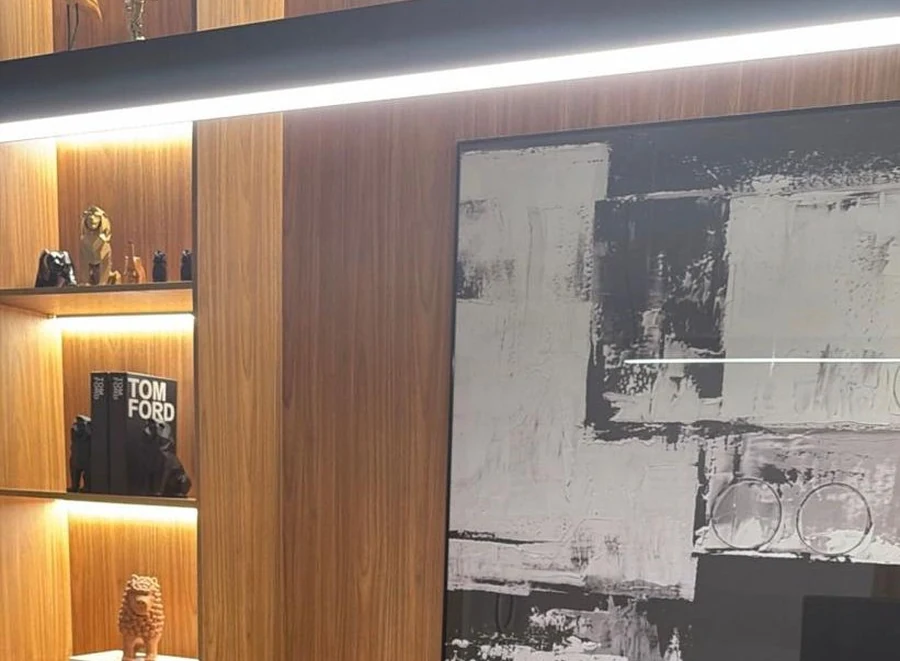

Gastos com a deficiência
Terapias (fono, TO, psicologia, ABA), medicamentos de uso contínuo, fraldas e transporte para consulta podem reduzir a renda considerada.
A lei fala em renda por pessoa abaixo de 1/4 do salário mínimo, mas esse número não decide sozinho. Gastos com terapias, medicamentos e fraldas podem sair da conta — e muita família é negada sem que isso tenha sido considerado. A análise do seu caso é gratuita.
Desde 2021 a lei permite considerar as despesas com a deficiência no cálculo. Se o INSS não considerou, a conta que reprovou você pode estar errada.
É a regra geral. Mas a lei de 2021 admite chegar a 1/2 salário mínimo em certos casos, e o STF já afastou o critério fixo.

O 1/4 não é a conta finalO INSS soma o que entra na casa e divide pelo número de pessoas do grupo familiar. É nessa conta que mora a maior parte dos indeferimentos por renda.
O INSS soma tudo o que entra na casa, divide pelo número de pessoas do grupo familiar e compara o resultado com 1/4 do salário mínimo. Se ficar igual ou acima, o pedido é indeferido. O problema é que essa conta costuma sair de forma automática, sem olhar o que a família gasta com a deficiência.
Desde 2021 a lei permite considerar as despesas com o tratamento — terapias, medicamentos, fraldas, transporte para consulta. E o STF já decidiu que o limite de 1/4 não é a única forma de comprovar a situação de miséria da família.
Se algum dos três pontos abaixo aconteceu no seu caso, a renda considerada pelo INSS pode estar acima da real. Confirme gratuitamente com a nossa equipe.
Terapias (fono, TO, psicologia, ABA), medicamentos de uso contínuo, fraldas e transporte para consulta podem reduzir a renda considerada.
A lei lista quem compõe o grupo. Parente que mora junto mas não está nessa lista não deveria ser contado na divisão.
BPC recebido por outro membro, Bolsa Família e alguns auxílios eventuais ficam de fora do cálculo — mas às vezes entram por engano.
Pode dar. O limite de 1/4 é o ponto de partida, não o fim da análise. A lei de 2021 admite chegar a meio salário mínimo em certas situações, os gastos com a deficiência podem ser considerados e o STF já decidiu que a situação de miséria pode ser provada por outros meios. Tudo depende do que dá pra comprovar.
Negativa por renda quase sempre é uma questão de conta e de prova. Um advogado especialista refaz o cálculo e mostra a renda real da família, com documento. Veja como cuidamos do seu caso:
Pelo WhatsApp, um advogado especialista verifica quem o INSS contou no grupo familiar e o que entrou como renda. É comum aparecer gente e valor que não deveriam estar ali.
Notas de terapia, receitas, recibos de fralda e medicamento, comprovantes de transporte para consulta. É esse conjunto que muda o cálculo da renda.
Apresentamos a renda real da família, acompanhamos a avaliação social e seguimos o processo até a decisão. Liberado o benefício, o pagamento sai em agência próxima da sua casa.

Não é obrigatório, mas negativa por renda se resolve com conta e documento — e é exatamente aí que o pedido feito sozinho costuma cair.
Não discutimos o número do INSS: refazemos a conta inteira, com quem realmente compõe o grupo familiar e o que de fato entra como renda.
Terapia, medicamento, fralda, dieta e transporte para consulta. Cada despesa comprovada pesa na conta — e quase ninguém junta isso sozinho.
Avó, tio, primo ou parente que mora junto mas não entra na lista da lei não pode dividir a renda. Esse erro sozinho já reprova muita família.
Se o INSS insistir no cálculo automático, levamos a renda real à Justiça, onde o critério de 1/4 já foi relativizado pelo STF.
O escritório Eduardo Rodrigues Advocacia é especializado em BPC/LOAS e benefícios do INSS. Nossa missão é simples: tratar cada família como gente, com atendimento imediato, linguagem clara e zero burocracia para você.
Atuamos em todo o Brasil de forma 100% digital. A perícia, a avaliação social e o local de recebimento do benefício ficam sempre no ponto mais próximo e acessível da sua residência, com comodidade para você e sua família.
Atendemos em todo o Brasil de forma humanizada, rápida e segura. A análise inicial do seu caso é gratuita e sem compromisso. Se você tem a carta de indeferimento e os recibos das terapias em mãos, é só mandar pra gente.
Falar agora no WhatsApp